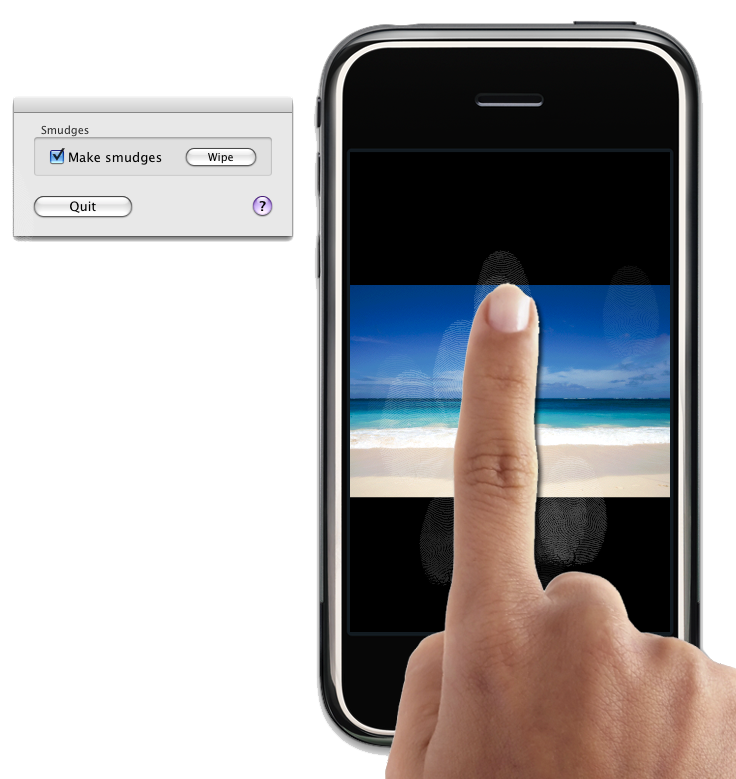

PhoneFinger
PhoneFinger transforms your Mac's mouse cursor into a realistic simulated human finger for testing and demoing iPhone applications and websites. It was released in 2008 as freeware and is now open-source.
As Seen In Demos For
WasteNot
Aki Mahjong
Comixology
WHERE
cocos2d
CubeCheater
Chris Pirillo
Quantum Pool
Pentos
Hand Format
PhoneFinger uses its own .hand format to bundle hand graphics and related information. In addition to those that are built-in, PhoneFinger will use .hands from ~/Library/Application Support/PhoneFinger/Hands.
A .hand file is actually a folder — you can right-click on it and choose "Show Package Contents" to look inside. Inside of a .hand package are the images the hand uses as well as an Info.plist file. So, to make a hand, just drop all the images and a customized Info.plist into a folder whose name ends with .hand, and drag it into the Hands folder. You'll have to restart PhoneFinger for the hand to show up.
The Info.plist can contain the following values:
PFHandName- The readable name of your hand. Displayed in the hand model menu in the app.
-
PFHandAuthoroptional - The person or company responsible for the hand. Not displayed currently.
-
PFHandAuthorWebsiteoptional - The URL or email associated with the above. Not displayed currently.
-
PFHandDescriptionoptional - A description of the hand. Not displayed currently.
-
PFHandVersionoptional - A version number for your hand to distinguish newer versions from older ones.
PFHandUpImage- The filename of the image that is displayed when no mouse button is pressed.
PFHandDownImage- The filename of the image that is displayed when at least one mouse button is pressed.
PFHandHotspotX- The location of the active part of the image (where a click will actually happen) expressed as a number of pixels from the left of the image
PFHandHotspotY- The location of the active part of the image (where a click will actually happen) expressed as a number of pixels from the top of the image
-
PFHandMinScaleFactoroptional - A number from 0 to 1.0 expressing the ratio to which your image will be scaled when the user selects the smallest size. You must also specify
PFHandMaxScaleFactorif you specify this property. -
PFHandMaxScaleFactoroptional - A number from 0 to 1.0 expressing the ratio to which your image will be scaled when the user selects the largest size.